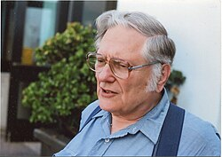

William Morton Kahan | |
|---|---|
 Kahan in 2008 | |
| Born | June 5, 1933 Toronto, Ontario, Canada |
| Education | University of Toronto (BS, MS, PhD) |
| Known for | |
| Awards | |
| Scientific career | |
| Fields | |
| Institutions | University of California, Berkeley |
| Thesis | Gauss–Seidel Methods of Solving Large Systems of Linear Equations (1958) |
| Byron Griffith | |
Doctoral students | James Demmel |
William "Velvel" Morton Kahan (born June 5, 1933) is a Canadian mathematician and computer scientist, who is a professor emeritus at University of California, Berkeley. He received the Turing Award in 1989 for "his fundamental contributions to numerical analysis."[2]
Born to a Canadian Jewish family,[2] he attended the University of Toronto, where he received his bachelor's degree in 1954, his master's degree in 1956, and his Ph.D. in 1958, all in the field of mathematics. Kahan is now emeritus professor of mathematics and of electrical engineering and computer sciences (EECS) at the University of California, Berkeley.
Kahan was the primary architect behind the IEEE 754-1985 standard for floating-point computation (and its radix-independent follow-on, IEEE 854). He has been called "The Father of Floating Point", since he was instrumental in creating the original IEEE 754 specification.[2] Kahan continued his contributions to the IEEE 754 revision that led to the current IEEE 754 standard.
In the 1980s Kahan developed the program "paranoia", a benchmark that tests for a wide range of potential floating-point bugs.[3] He also developed the Kahan summation algorithm, an important algorithm for minimizing error introduced when adding a sequence of finite-precision floating-point numbers. He coined the term "Table-maker's dilemma" for the unknown cost of correctly rounding transcendental functions to some preassigned number of digits.[4]
The Davis–Kahan–Weinberger dilation theorem is one of the landmark results in the dilation theory of Hilbert space operators and has found applications in many different areas.[5]
Kahan is an outspoken advocate of better education of the general computing population about floating-point issues and regularly denounces decisions in the design of computers and programming languages that he believes would impair good floating-point computations.[6][7][8]
When Hewlett-Packard (HP) introduced the original HP-35 pocket scientific calculator, its numerical accuracy in evaluating transcendental functions for some arguments was not optimal. HP worked extensively with Kahan to enhance the accuracy of the algorithms, which led to major improvements. This was documented at the time in the Hewlett-Packard Journal.[9][10] He also contributed substantially to the design of the algorithms in the HP Voyager series and wrote part of their intermediate and advanced manuals.
Kahan was named an ACM Fellow in 1994, and inducted into the National Academy of Engineering in 2005.[2]
{kind=link}